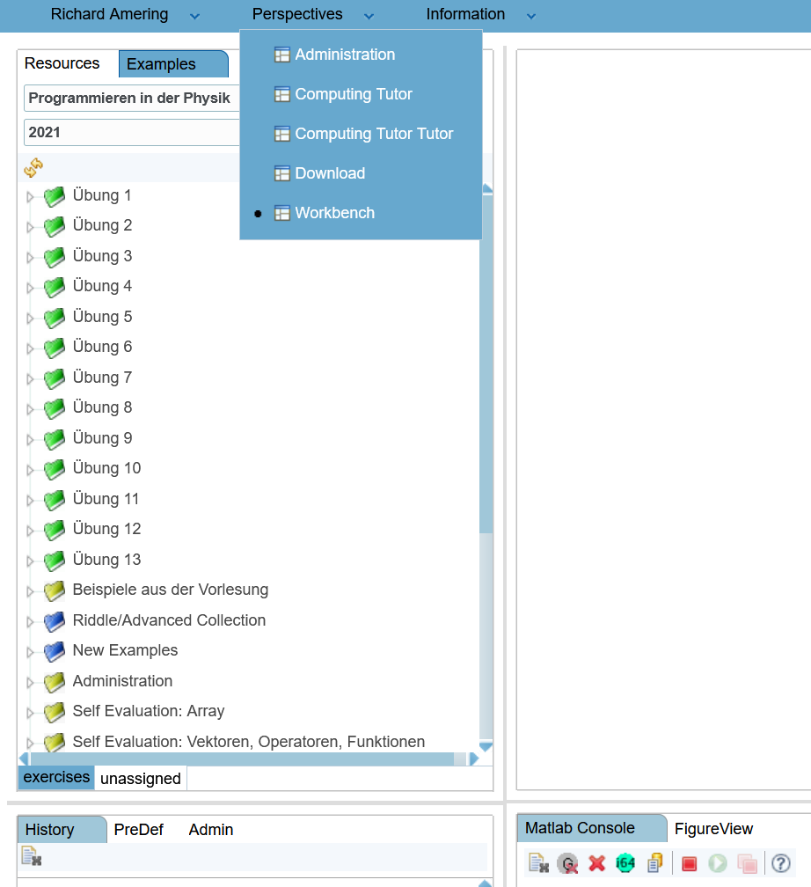
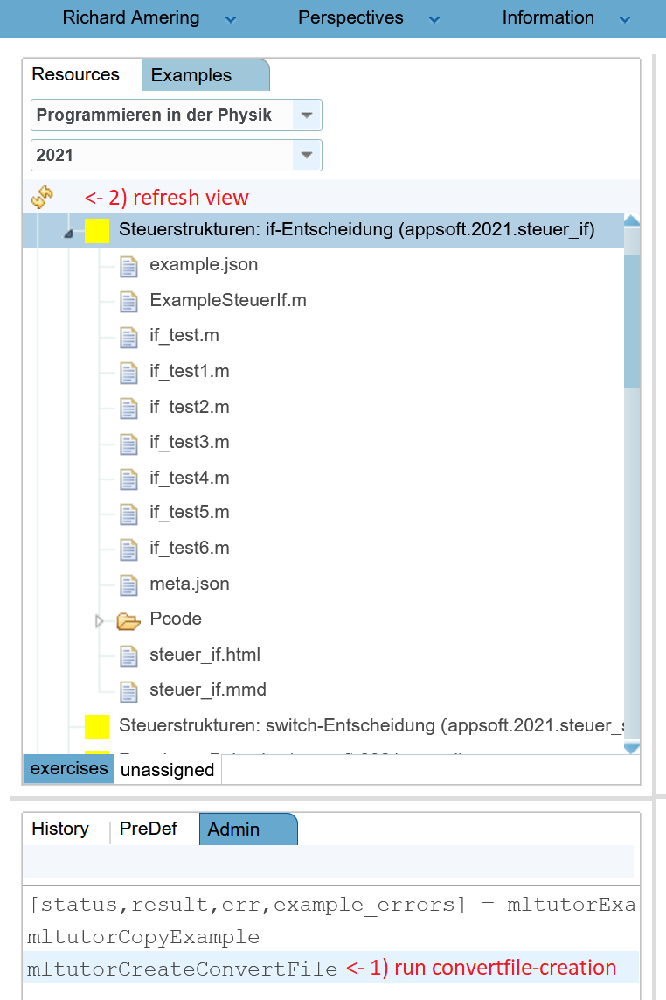
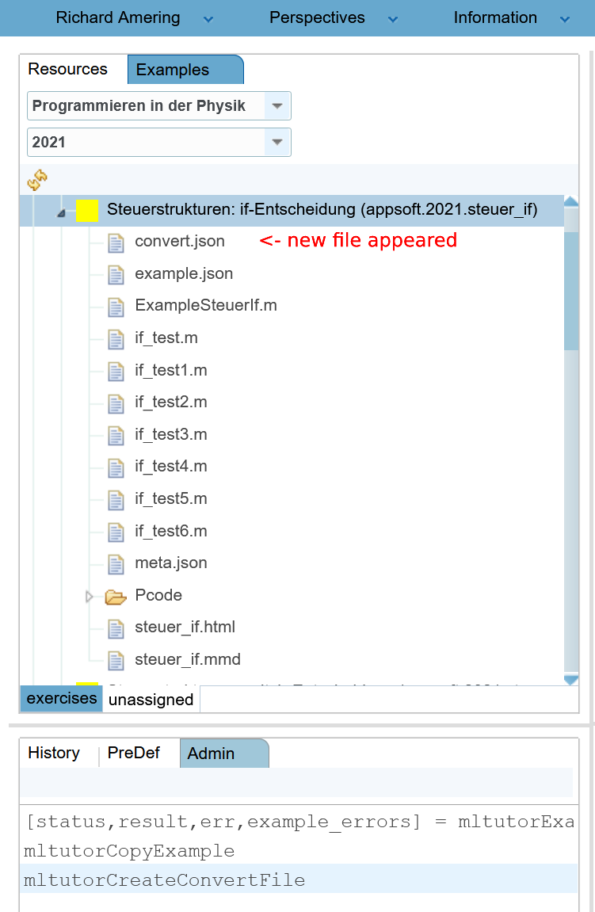
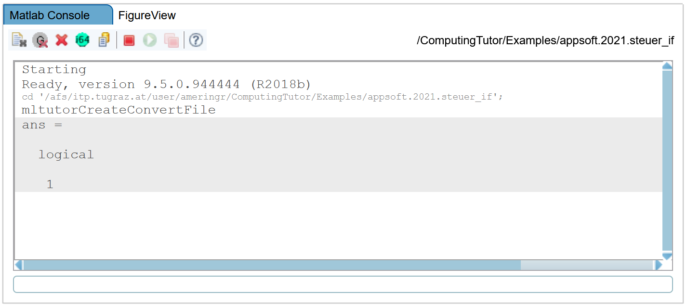
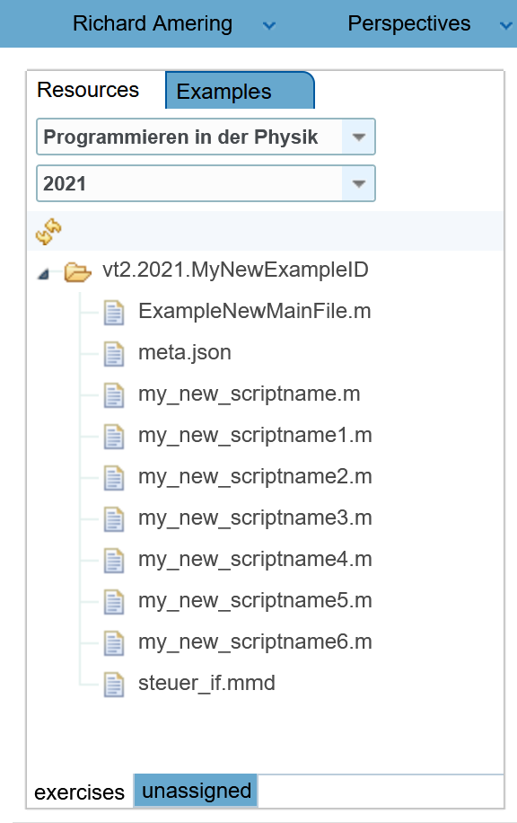
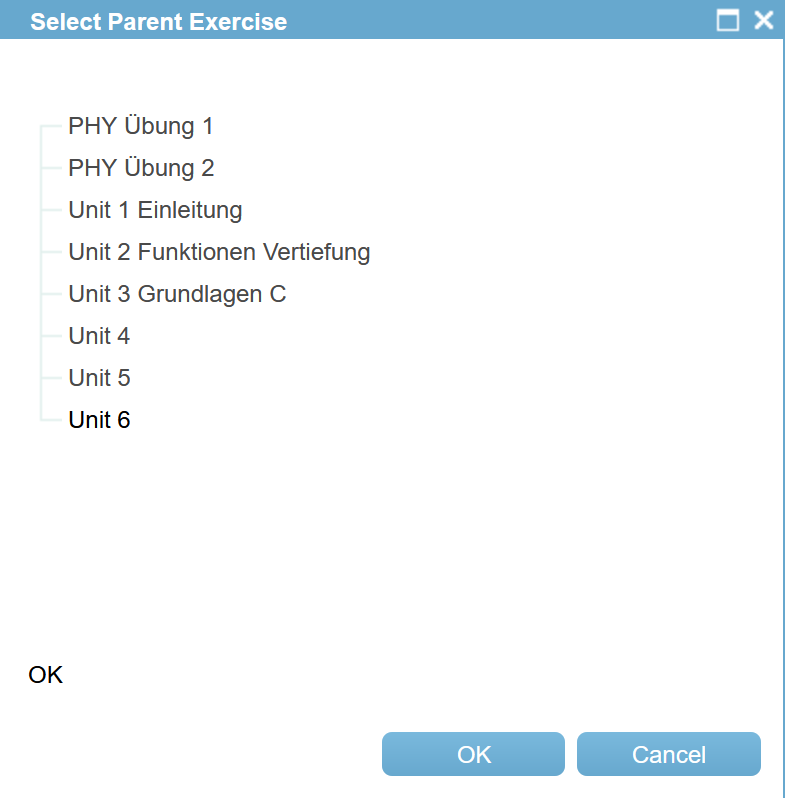
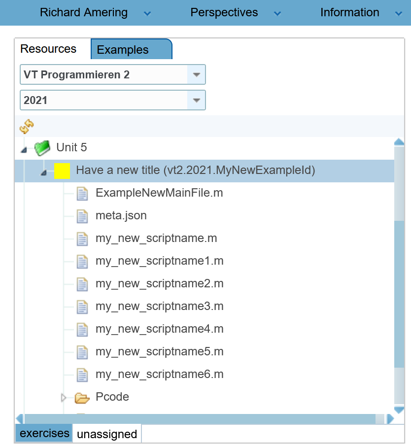

Implementing Tutor Examples¶
Implementing TutorExamples can be done under the Perspective “Workbench”, so be sure to select it, and then choose the tab “Examples” in the top left. All the following operations will take place within this view, although the selected course may vary.
)
Setting up a starting point¶
Whenever we want to implement new Tutor Examples, it is best to start from Examples aleady existing. This way, we have a strong guideline, allowing us to adjust files of interest, while not having to focus on proper creation of the setup-files needed by the tool. There are two ways to accomplish this: Copying an existing Example from another Course via Context Menus provided by MatlabTutor, and via creation of Convert-files.
Copying Examples by convert-file¶
The second way to implement new examples is by creating a so called Convert-file. MatlabTutor provides us with two functions that create such files, and then build new examples from them. Contrary to the Context-menu approach, we have more control of the building process, since we can alter the convertfile in the building process, preventing us from having to change things like filenames, functionnames or the author in many different places. Instead, we can specifiy the things we want to change within the convert-file, and MatlabTutor will automatically apply these changes wherever needed. It can be viewed as a more convenient way of getting to the starting point in defining the examples. No matter which of the two approches you choose, you still need to define your matlab-script, the example-description markdown, and your test-set.
Create a convert-file¶
We will start again by heading to the Example we want our conversion-process to start from, checking it out and viewing the internal files. Below the example listing on the left side, we find three tabs, called “History”, “PreDef” and “Admin”. If we select the “Admin” tab, we find the two important functions mentioned earlier, “mltutorCreateConvertFile” and “mltutorCopyExample”. We can run “mltutorCreateConvertFile” by double-clicking it. This will create our Convert file, and finish by printing “logical 1” into the console. This indicates that the conversion process was in fact successful, and we can now access the conversion file. We do this by refreshing the file-view panel (click the yellow circular arrows in the top left of the file-view, or right-click the Example and click “Refresh” in the context menu). A new file will appear within the Example, called “conversion.json”.



Modifying the convert-file¶
We can open files by double-clicking them. Their contents will appear in the editor window in the middle section. When inspecting the conversion.json file, we will find something along the following lines:
{
"newExampleID": "appsoft.2021.steuer_if_mod",
"main": "ExampleSteuerIf.m",
"title": "Steuerstrukturen: if-Entscheidung",
"language": "",
"author": "Winfried Kernbichler",
"changes": {
"if_test": "if_test"
}
}
The content of this file determines how the new example is going to look like after copying it. Most of the changes we can make in here should be obvious.
Start with newExampleID: We want the new Example to be included in the “VT Programmieren 2” course, and have the ID “MyNewExampleID”. Therefore, we change the according line to “vt2.2021.MyNewExampleID”.
“main” is referring to the main file including all the MatlabTutor tests. This file must always start with the word “Example”, otherwise the tests we add to it won’t be run. Change it to “ExampleNewMainFile.m”
“title” is referring to the example-title that will be displayed within the Example-selection-tree on the left side.
“author” should be changed to your name.
“changes” is a JSON object (with key-value pairs) and can include multiple entries. In the copy-process, all of the files contained by the original example, along with file-names are going to be parsed. Each occurence of a key-string will then be replaced with the corresponding value-string provided by this object. This allows us to make thorough naming changes, without having to worry about overlooking one variable- or file-name in one of our files. This ensures that all tests are still working afterwards.
Our original Example includes several files with a filename including “if_test”. We want to change them to new names starting with “my_new_scriptname”. We could write one key-value pair for each “if_test”-file we want to change, but it is not necessary. If we only include “if_test” as a key (without specifying the number of one particular file), then all the files including “if_test” in its name will be changed. This means that the key-value pair “if_test”: “my_new_script” will change the files “if_test1”, “if_test2” and so on (and also references to these files within our code) to “my_new_script1”, “my_new_script2”. In this case, one entry in our changes-object is sufficient to rename several files at once. You can search through the original files and find additional code changes you want to conduct. If so, add them as a new key-value pait to the changes-object, separated from other pairs by a comma (“,”).
Note that we also want to rename our main-test-file to “ExampleNewMainFile.m”. Since we already declared that name within the “main” field, it is not necessary to include it in the changes-field.
Your convert.json should now look similar to the following:
{
"newExampleID": "vt2.2021.MyNewExampleID2",
"main": "ExampleNewMainFile.m",
"title": "Have a new title",
"language": "",
"author": "Richard Amering",
"changes": {
"if_test": "my_new_scriptname"
}
}
When the desired changes are made to the file, you can save them by pressing Ctrl+S on your Keyboard. The file-tab at the top of the editor will indicate the saved changes by not showing a “*” beside the filename.
Copying the Example¶
In order to create our new example, we have to run the “mltutorCopyExample” script, which is accessible from the “Admin” tab, the same place where we found the “mltutorCreateConvertFile” script earlier. Run the script by double-clicking, and wait for “logical 1” to appear in the console. This indicates a successful copy-process.
When you successfully converted the Example, it is not yet assigned to any Course or Excercise, and therefore not visible in the excercises view. Instead, we find the newly created Example under the “unassigned” tab, wich is located right under the example-view:

You will find your example in a folder named with the corresponding ExampleID. You can now check the “meta.json” file, if all its entries are correct. Otherwise, you can still change them within this file, but then you also need to apply these changes to other file- and variable-names within the other Example files. Otherwise, your Example may stop working, or not run the tests correctly. Unlike in the conversion process, the “meta.json” file is not being parsed later, so changes within it are not being applied automatically to other locations.
Assigning the new Example¶
Since the newly created Example is not yet assigned to any Excercise, it will also not be available to students of the course. In order to assign it, we first have to navigate to the course that should contain the new example. We will select “VT Programmieren 2”. Afterwards, we right-click on the folder containing the example (in the “unassigned” tab), and click “Commit”.
Note
Note that every “Commit” command within the MatlabTutor automatically starts an Example-Validation process. If the example you are working with has failing tests or is invalid in any other sense, you are not able to assign it to an excercise until these issues are resolved and the validation process succeeds.
After the validation finished, you will see a new window, allowing you to specify the target exercise. If the excercise you anticipated is not shown, it is likely that you did not navigate to the correct course beforehand. You can still cancel the process and then select the proper course. Note that a “Commit successful” message will be displayed, even if you cancelled the commit-process.
Choose the correct Excercise from the window by clicking on it. The selected Excercise will be indicated by a slighlty darker font. This can be very subtle and easily be missed. If you are unsure which Excercise is selected, you can click it again of course. We will select Excercise “Unit 5”, and then click “OK”. The unassigned Example should now be vanished from the “unassigned” tab, and moved to the selected Excercise instead.


Either via Context menu, or Convert file, when you have a new Example assigned to an Excercise, you are ready to define the tests required to pass your Example. We will cover the details of defining these tests in the next chapter.